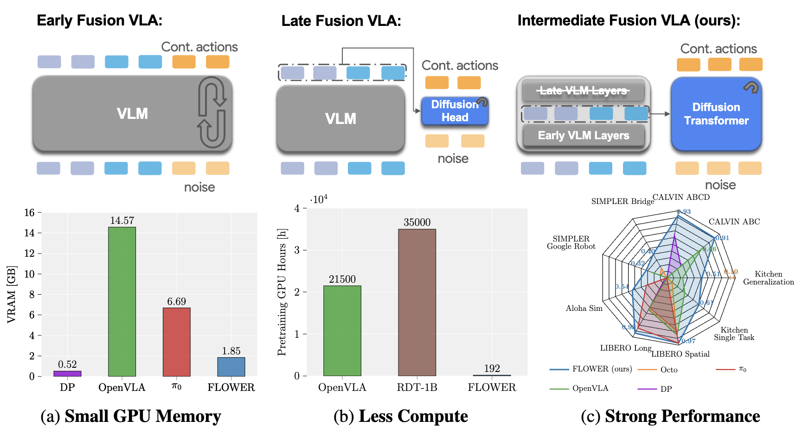
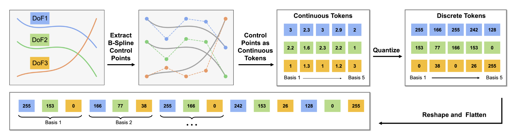
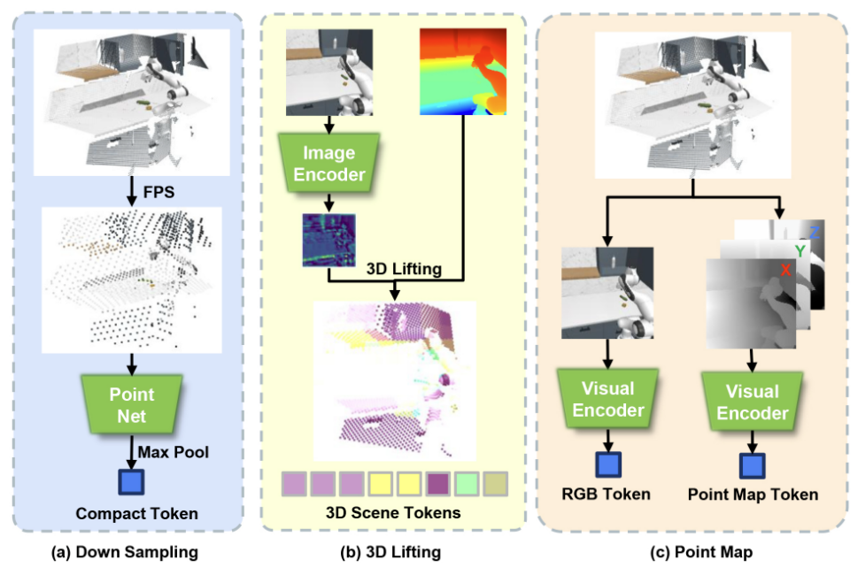
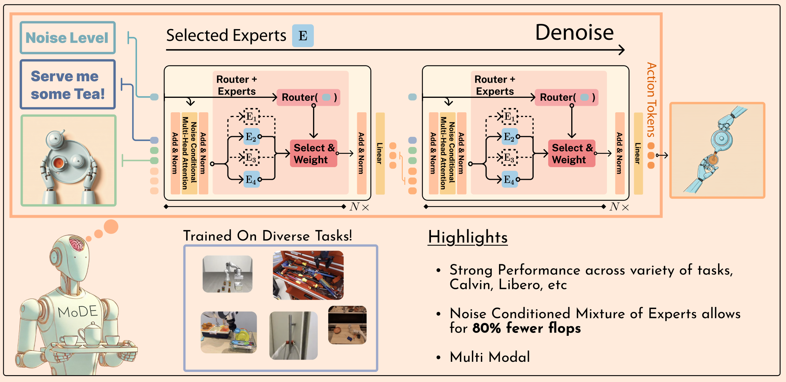
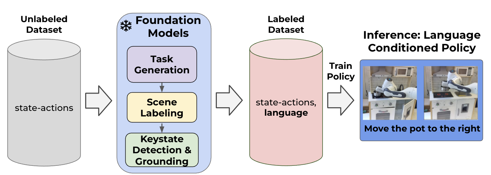

|
I am a fourth-year PhD student in the Intuitive Robots Lab (IRL) at the Karlsruhe Institute of Technology (KIT), Germany. My research focuses on developing new machine learning methods to teach robots new behavior from uncurated, multimodal human demonstrations, supervised by Rudolf Lioutikov. I am grateful for the Apple PhD Fellowship 2025 for supporting my research. I was an intern at Apple DMLI, working on robotics supervised by Peide Huang and Jian Zhang. Previously, I obtained my Master's Degree in Mechanical Engineering at KIT where I wrote my thesis at Bosch Research supervised by Gerhard Neumann. During my studies I interned at Audi AG, IPG Automotive, and the Research Center for Informatics (FZI). Email / CV / Google Scholar / Github / LinkedIn |

|
|
My primary research goal is to build intelligent embodied agents that assist people in their everyday lives and communicate intuitively. I am focussing on language-conditioned multitask imitation learning from robot play data. My work focuses on developing efficient Vision-Language-Action (VLA) policies and novel policy representations that can learn from uncurated, multimodal human demonstrations without rewards. I have worked on score-based diffusion policies and developed generalist VLA models that achieve strong performance with minimal computational requirements. Representative papers are highlighted. |
|

Moritz Reuss, Hongyi Zhou, Marcel Rühle, Ömer Erdinç Yağmurlu, Fabian Otto, Rudolf Lioutikov CoRL, 2025 Project Page / Code / Arxiv We systematically analyze VLA design decision for small and efficient VLAs. Our findings let us to introduce FLOWER, a 950M parameter Vision-Language-Action (VLA) policy that achieves state-of-the-art performance across 190 tasks in 10 benchmarks while requiring only 1% of the pretraining compute of models like OpenVLA. FLOWER introduces intermediate-modality fusion and action-specific Global-AdaLN conditioning to achieve strong performance with improve efficiency. Our approach democratizes VLA development by making high-performance robotic foundation models accessible with commodity hardware, requiring significant less GPU memory to run. |
|

Hongyi Zhou, Weiran Liao, Xi Huang, Yucheng Tang, Fabian Otto, Xiaogang Jia, Xinkai Jiang, Simon Hilber, Ge Li, Qian Wang, Ömer Erdinç Yağmurlu, Nils Blank, Moritz Reuss, Rudolf Lioutikov NeurIPS, 2025 Project Page / Code / Arxiv We introduce BEAST, a novel B-spline based action tokenizer that efficiently represents continuous robot actions for generalist policies while maintaining smooth trajectories essential for robot control. BEAST enables more efficient action representation and improved performance in vision-language-action models by leveraging the mathematical properties of B-splines for smooth, continuous control. It is flexible to be combined with both continuous tokens and as a discrete tokenizer. Experiments across various benchmark verify good compression with strong perfomrance and smooth behavior without additonal temporal aggregation. |
|

Xiaogang Jia, Qian Wang, Anrui Wang, Han A. Wang, Balázs Gyenes, Emiliyan Gospodinov, Xinkai Jiang, Ge Li, Hongyi Zhou, Weiran Liao, Xi Huang, Maximilian Beck, Moritz Reuss, Rudolf Lioutikov, Gerhard Neumann NeurIPS, 2025 Project Page / Paper We present PointMapPolicy, a multi-modal imitation learning method that conditions diffusion policies on structured grids of points without downsampling. Our approach fuses point maps with RGB data using xLSTM as a backbone, enabling the direct application of computer vision techniques to 3D data while preserving fine-grained geometric details. Through extensive experiments on RoboCasa and CALVIN benchmarks plus real robot evaluations, we achieve state-of-the-art performance across diverse manipulation tasks by combining detailed geometric structure from point clouds with rich semantic context from RGB images. |
|

Moritz Reuss*, Jyothish Pari*, Pulkit Agrawal, Rudolf Lioutikov ICLR 2025 Project Page / Code / Arxiv We propose Mixture-of-Denoising Experts (MoDE) as a novel generalist policy for guided behavior generation, that outperforms dense transformer-based Diffusion Policies in performance, number of parameters and efficiency. Our proposed method introduces a novel routing strategy, that conditions the expert selection on the current noise level of the diffusion process. We test MoDE on four established imitation learning benchmarks, including CALVIN and LIBERO. In our experiments, MoDE consistently outperforms dense transformer architectures and state-of-the-art baselines on CALVIN and LIBERO benchmark. We pretrain MoDE on a subset of OXE for just 3 days on 6 GPUS to surpass OpenVLA and Octo in terms of performance on SIMPLER. In addition, MoDE achieves higher average performance with 90% less FLOPS, 20% faster inference and 40% less parameters compared to the dense transformer diffusion policy. |
|

Nils Blank, Moritz Reuss, Marcel Ruehle, Ömer Erdinç Yağmurlu, Fabian Wenzel, Oier Mees, Rudolf Lioutikov Conference on Robot Learning 2024 (CoRL), Oral @ 2nd Workshop on Mobile Manipulation and Embodied Intelligence at ICRA 2024 Paper Link We introduce a novel approach to automatically label uncurated, long-horizon robot teleoperation data at scale in a zero-shot manner without any human intervention. We utilize a combination of pre-trained vision-language foundation models to detect objects in a scene, propose possible tasks, segment tasks from large datasets of unlabelled interaction data and then train language-conditioned policies on the relabeled datasets. Our initial experiments show that our method enables training language-conditioned policies on unlabeled and unstructured datasets that match ones trained with oracle human annotations. |

Moritz Reuss, Ömer Erdinç Yağmurlu, Fabian Wenzel, Rudolf Lioutikov Robotics: Science and Systems (RSS), 2024, Oral @ Workshop on Language and Robot Learning (LangRob) @ CoRL 2023, Project Page / Code / Arxiv We present a novel diffusion policy for learning from uncurated, reward-free offline data with sparse language labels. Our method, called Multimodal Diffusion Transformer (MDT), is able to learn complex, long-horizon behaviors and sets a new state-of-the-art on the challenging CALVIN benchmark. MDT uses a novel transformer architecture for diffusion policies, that leverages pre-trained vision and language foundation models and aligns multimodal goal-specifications in the latent space of the transformer encoder. MDT uses two novel self-supervised auxiliary objectives to better follow goals specified in language and images. |

Xiaogang Jia, Denis Blessing, Xinkai Jiang, Moritz Reuss, Atalay Donat, Rudolf Lioutikov, Gerhard Neumann ICLR 2024 OpenReview Introducing D3IL, a novel set of simulation benchmark environments and datasets tailored for Imitation Learning, D3IL is uniquely designed to challenge and evaluate AI models on their ability to learn and replicate diverse, multi-modal human behaviors. Our environments encompass multiple sub-tasks and object manipulations, providing a rich diversity in behavioral data, a feature often lacking in other datasets. We also introduce practical metrics to effectively quantify a model's capacity to capture and reproduce this diversity. Extensive evaluations of state-of-the-art methods on D3IL offer insightful benchmarks, guiding the development of future imitation learning algorithms capable of generalizing complex human behaviors. |

Moritz Reuss, Maximilian Li, Xiaogang Jia, Rudolf Lioutikov Best Paper Award @ Workshop on Learning from Diverse, Offline Data (L-DOD) @ ICRA 2023, Robotics: Science and Systems (RSS), 2023 project page / Code / arXiv We present a novel policy representation, called BESO, for goal-conditioned imitation learning using score-based diffusion models. BESO is able to effectively learn goal-directed, multi-modal behavior from uncurated reward-free offline-data. On several challening benchmarks our method outperforms current policy representation by a wide margin. BESO can also be used as a standard policy for imitation learning and achieves state-of-the-art performance with only 3 denoising steps. |

Denis Blessing, Onur Celik, Xiaogang Jia, Moritz Reuss, Maximilian Xiling, Rudolf Lioutikov, Gerhard Neumann Thirty-seventh Conference on Neural Information Processing Systems (NeurIPS) , 2023 arXiv We introduce the Information Maximizing Curriculum method to address mode-averaging in imitation learning by enabling the model to specialize in representable data. This approach is enhanced by a mixture of experts (MoE) policy, each focusing on different data subsets, and employs a unique maximum entropy-based objective for full dataset coverage. |

Moritz Reuss, Niels van Duijkeren, Robert Krug, Philipp Becker, Vaisakh Shaj, Gerhard Neumann Robotics: Science and Systems (RSS), 2022 arXiv We present a novel hybrid model, combining an differentiable rigid-body model with an recurrent LSTM, to accurately model the inverse dynamics of a robot manipulator. Our novel differentiable formulation of Barycentric parameters enables us to train our model end-to-end jointly with the residual neural network, while implicitly maintaining all requirements for physical consistency. We test our model on a Franka Emika Panda robot and show that it can be used to enable precise and compliant motion tracking. |
|
The website is based on the code from source code! |